Com seis pontos de vantagem e três rodadas por jogar, o Flamengo é campeão se vencer ou empatar: no empate, chega a 80 pontos e 24 vitórias, e o Palmeiras, no máximo, a 80 com 23. Perdendo, a decisão fica para as duas últimas rodadas. Pág. 12.
O Atlético-MG, vice em 2025 nos pênaltis, enfrenta em Barranquilla um Boca que eliminou São Paulo e Vasco. Na semana que vem, o Palmeiras decide a Libertadores com o Estudiantes, em Montevidéu. Pág. 14.
Prédios diplomáticos de Áustria e Holanda são danificados em Kiev. Pág. 5.
🧪 Mpox: Rio amplia a vacina e o estado soma 382 casos. Pág. 7.
💰 Bastter e antigolpe (20–21) · 😂 Tirinhas (22–23) · 📜 Homeopatia e o 1º ensaio cego (24–25) · 🏛️ Verdade (26–27) · ⚖️ Torcer com saúde (28–29).
O que está em jogo. O PLP 299/2026 saiu do Senado em 18/11, depois de o texto-base passar por 45 a 31 no dia 12. A meta é um superávit de 0,5% do PIB em 2027, cerca de R$ 73,2 bilhões. O governo estima o efeito fiscal em R$ 50 a 60 bilhões no ano; reportagens citam "até R$ 56 bilhões" e "até R$ 60 bilhões". Em 2026, até R$ 10,5 bilhões do subsídio ao diesel ficam fora da meta.
Na Câmara. O relator é o deputado Mauro Benevides Filho (União-CE). O líder do governo, Paulo Pimenta, disse em 17/11 que o fim da compensação tributária cruzada é o centro do projeto e que ele financia Pé-de-Meia, reajuste do Bolsa Família e Pix-MEI. O governo se opõe a uma emenda que limitaria o crescimento das despesas a 0,6%. A oposição apresentou no Senado um destaque sobre o diesel, de Rogério Marinho (PL-RN), rejeitado.
Escala 6x1 no STF. As ações ADI 8041 e 8042 estão no Plenário Virtual até as 23h59 de segunda (23). A liminar do ministro Flávio Dino, de 12/11, mantém o início das 42 horas semanais em 16/12 e permite, na transição, 42 horas em cinco dias, com até 8h24 por dia. Uma reportagem de 17/11 relata pedido de vista do ministro Luiz Fux; a liminar segue valendo. A CNC pediu o adiamento de parte das regras.
Clima. 24 h Temporais no Rio Grande do Sul deixaram três mortos e cerca de 60 feridos na sexta, segundo balanço noticiado pela CNN Brasil; a Defesa Civil investiga uma microexplosão. Em São Paulo, foram 33 alertas preventivos.
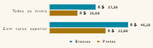
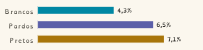
Seg 23: fim da sessão virtual do STF. Ter 24: data mais citada para o PLP na Câmara. Sex 27: PNAD do trimestre até outubro.
A nº 015 citou sessão na segunda (23); reportagens de 17 e 18/11 falam em terça (24). O jornal registra as duas datas até a pauta oficial.
O jornal não toma partido. Publica fatos, números oficiais e declarações atribuídas, com o mesmo tratamento a todos os lados.
Calor. A Funceme previu para 18 a 20/11 tempo firme e máximas de 30 a 38 °C, com o calor mais forte no Sertão Central, nos Inhamuns, no litoral de Fortaleza e Pecém e na região Jaguaribana. Ibiapaba e Maciço de Baturité ficaram mais amenos. A previsão específica para sábado e domingo não foi localizada até o fechamento; a tendência dos boletins da semana é de céu claro.
Chuva isolada. Na madrugada de 17/11, a Funceme registrou 148 mm em Varjota, 111 mm em Ipueiras e em Ipu, 108 mm em Reriutaba e 101 mm em Pires Ferreira, todos na região de Sobral. São chuvas de pré-estação, sem efeito na quadra chuvosa.
El Niño. O decreto estadual de 13/11 vale por 180 dias para 65 municípios, como Caucaia, Crateús, Quixadá e Tauá. A Funceme classifica o fenômeno como muito forte; a agência americana NOAA dá 63% de chance de evento muito forte entre novembro e janeiro, com reflexo na quadra chuvosa de fevereiro a maio de 2027. O governador Elmano de Freitas anunciou adutoras, a retomada de um açude e a compra de perfuratrizes de poços.
Santa Casa. Contexto O déficit de cerca de R$ 3 milhões por mês, levado à Câmara de Sobral nesta semana, se soma a decisões de agosto: a Justiça declarou ilegal a intervenção municipal de 2022 a 2025 e mandou devolver R$ 13,7 milhões em incentivos federais retidos, além de R$ 131.925,60 por mês do incentivo da UTI neonatal tipo II. Uma perícia concluiu que os repasses do SUS não cobrem os custos. Novos desdobramentos não foram localizados até o fechamento.
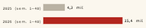
Pratinho de planta, calha e caixa-d'água destampada viram criadouro mesmo sem chuva. Dez minutos no sábado resolvem.
Idosos sozinhos, bebês, trabalhadores ao sol e quem usa diurético. Uma ligação no fim da tarde já é cuidado.
O Vila Real fecha a fase de grupos da Taça Fares Lopes no domingo (22). Programação cultural da cidade não foi localizada. Pág. 13.
Câmbio. O real perdeu valor por seis pregões seguidos. Na quarta (18), o dólar fechou a R$ 5,868, o maior valor desde abril de 2025, mesmo com o Banco Central vendendo US$ 1 bilhão em leilões de linha; na quinta (19), foi a R$ 5,934. O movimento acompanha a expectativa sobre o ajuste fiscal na Câmara e a alta dos juros americanos.
Fed. A ata da última reunião, divulgada em 18/11, indica que dirigentes esperam novos aumentos e trata a demanda de energia e chips da inteligência artificial como risco inflacionário. Os juros estão entre 3,75% e 4,00%, e o mercado projeta alta de 0,25 ponto em 8 e 9 de dezembro. O título de 10 anos dos EUA rende cerca de 5,1%.
Brasil. O Copom encerrou em 4/11 o ciclo de cinco cortes de 0,25 ponto e manteve a Selic em 13,75%. O Focus de 16/11 projeta Selic de 13,75% no fim de 2026 e de 12,75% em 2027, IPCA de 5,11% e 5,00%, dólar de R$ 5,40 e PIB de 1,72%. O desemprego do 3º trimestre ficou em 5,2%, o menor para o período desde 2012.
Petróleo e IA. O Brent fechou a US$ 91,95 em 18/11, com o Estreito de Ormuz sob ameaça. A Nvidia reportou receita trimestral de US$ 115,8 bilhões, alta de 103%, e previu US$ 130 bilhões sem vendas de data center à China. Os fechamentos de Wall Street de sexta (20) não estavam disponíveis no fechamento desta edição.
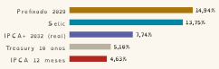
Conteúdo educativo. O jornal não é consultor financeiro.
Seg 23: Focus · Ter 24: PLP 299 na Câmara (data provável) · Qui 26: feriado de Ação de Graças nos EUA · Sex 27: PNAD e Black Friday.
O comércio eletrônico espera vender R$ 13,3 bilhões de 26 a 29/11, alta de 20,7%, segundo Confi/Neotrust.
Wall Street, petróleo e ouro de sexta e o 2º pregão da Anthropic: as cotações não estavam publicadas até o fechamento.
Ucrânia. A Euronews informou na sexta que ataques russos atingiram áreas de Kiev e danificaram as embaixadas da Áustria e da Holanda. Entre 16 e 17/11, a Rússia lançou 38 mísseis e 286 drones, com 239 drones interceptados, segundo a Ucrânia; na madrugada de 18/11, foram 141 drones e cinco mortos. A Comissão Europeia propôs um empréstimo de € 45 bilhões para um rombo ucraniano estimado em € 70 bilhões em 2027.
Mar Negro. O navio Gas Husky, com 3.400 toneladas de gás liquefeito, afundou a cerca de 80 km da costa búlgara depois de ser atingido; os 19 tripulantes foram resgatados. A Moldávia fechou o espaço aéreo após detectar um drone do tipo Shahed.
Gaza. Em 18/11, tanques israelenses avançaram além da chamada linha amarela, perto de Bureij e Nuseirat, na primeira incursão terrestre na área desde o cessar-fogo. Israel disse ter mirado infraestrutura do Hamas; o Hamas chamou a ação de violação. As contagens de mortos desde a trégua divergem: ao menos 1.600 (Reuters) e 1.658 (Ministério da Saúde de Gaza). O Conselho de Paz enviou à ONU relatório que aponta descumprimentos dos dois lados.
Golfo. Após um ataque dos EUA à ilha iraniana de Qeshm, o Irã disse ter mirado a base de Ali Al Salem, no Kuwait. A Guarda Revolucionária afirma que Ormuz está fechado; a Marinha americana mantém 17 destróieres no bloqueio. EUA: a democrata Mary Peltola venceu no Alasca, e o Senado fica com 56 democratas e 44 republicanos, segundo a AP.
COP31. O rascunho de 16/11 previa eletricidade com 35% do consumo de energia até 2035, triplicar o dinheiro para adaptação até ao menos US$ 120 bilhões e piso de US$ 300 bilhões por ano. Até 17/11, os boletins da conferência registravam impasse. O texto final não estava publicado no fechamento.
Esquema original 360, fora de escala.
G20 em Miami, 14 e 15/12, sem a África do Sul entre os convidados. Copa Davis em Bolonha, 24 a 29/11.
No Chile, o dólar passou de 1.023 pesos, com o cobre abaixo de US$ 6 por libra. Nos EUA, a Justiça manteve suspensa a proteção temporária de 348 mil venezuelanos.
Em conflitos, o jornal atribui cada número e cada versão à sua fonte e registra quando divergem.
Durante 41 anos, um "elo perdido" inglês enganou a ciência porque confirmava o que muitos queriam ver. O teste de flúor e o exame dos dentes limados o derrubaram. A lição serve à medicina: dado que agrada demais merece dupla checagem.
Mpox. Em 18/11, o Ministério da Saúde enviou mais de mil frascos ao município do Rio, que desde 17/11 vacina também usuários de PrEP, com receita ou laudo dos últimos seis meses, e pessoas com HIV e CD4 abaixo de 200. O esquema é de duas doses com 28 dias de intervalo. A cidade soma 297 diagnósticos em 2026; o estado, 382 até 13/11, com ao menos 55 internações. O primeiro óbito do ano no país foi de um paciente com imunossupressão prévia. As contagens estaduais divergem entre boletins.
SUS. Em 19/11, a Comissão Intergestores Tripartite pactuou a atualização da política de saúde indígena e a incorporação de novos medicamentos à assistência farmacêutica; a lista não foi divulgada. Está em consulta pública o projeto de novos complexos da Fiocruz e do Inca, com R$ 10 bilhões previstos. O Brasil mantém a eliminação do sarampo, reconhecida pela Opas.
Agências. A FDA aprovou em 16/11 o obinutuzumabe para nefropatia membranosa primária e a dexmedetomidina sublingual para agitação tratada em casa; em 17 e 18/11, aprovou remédios para câncer de pulmão ALK+, Niemann-Pick C, Gaucher tipo 3 e miastenia gravis. Na Europa, o comitê da EMA recomendou o baxdrostat para hipertensão de difícil controle e orientou que mulheres em uso de tirzepatida somem método de barreira ao anticoncepcional oral por quatro semanas após o início e após cada aumento de dose. A Anvisa já aprovou 20 canetas de análogos de GLP-1 em 2026.
OMS. A organização publicou em 14/11 sua primeira diretriz para diabetes tipo 1 em adultos; o relatório de 16/11 sobre resistência mostra mais planos nacionais, mas falta de testes e tratamento. O anexo de patógenos e benefícios do Acordo de Pandemias tem prazo em maio de 2027.
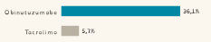
Antibiótico com indicação, cultura antes, dose certa e prazo curto quando cabe. Siga o protocolo da comissão de infecção.
Lesões de pele ou mucosa com febre e linfonodos: isole, colha e notifique. Vacina segue os critérios do município.
Não foram localizados estudos novos de NEJM, Lancet ou JAMA de 19–20/11 até o fechamento; os itens acima são contexto.
| Etapa | O que fazer | ⚠️ Pegadinha de prova |
|---|---|---|
| 1. Estabilizar | Dois acessos calibrosos, cristaloide com parcimônia, proteger a via aérea se rebaixamento ou hematêmese maciça. Estratifique com Glasgow-Blatchford. | Escore 0–1 permite alta sem endoscopia de urgência; Rockall pré-endoscópico não serve para isso. |
| 2. Transfundir | Gatilho de Hb 7 g/dL, alvo 7–9; considere 8 na doença cardiovascular. Plaquetas e plasma só com indicação. | Na variz, transfundir demais sobe a pressão portal e aumenta o ressangramento. |
| 3. Antes da EDA | IBP IV. Eritromicina 250 mg IV 30–120 min antes clareia o estômago. Suspeita de variz: terlipressina, octreotida ou somatostatina + ceftriaxona 1 g/dia. | Ácido tranexâmico não: no HALT-IT, sem queda de óbito e com mais trombose venosa. |
| 4. Endoscopia | Em até 24 h após estabilizar; variz em até 12 h. Úlcera de alto risco tratada: IBP em dose alta por 72 h. | EDA em ≤ 6 h não reduziu a mortalidade em 30 dias (8,9% × 6,6%, Lau 2020). |
| 5. Variz | Ligadura elástica. Child C (10–13) ou Child B com sangramento ativo: TIPS preemptivo em até 72 h. Falha: balão por até 24 h como ponte. | Vasoativo por 2 a 5 dias; o antibiótico reduz infecção, ressangramento e morte. |
Conteúdo educativo. Siga o protocolo institucional.
Homem de 58 anos, cirrose alcoólica com ascite, três episódios de hematêmese. PA 86/50, FC 118, Hb 6,4, sonolento.
Conduta: IOT de proteção com estômago cheio (p.10), concentrado de hemácias até Hb 7–8, terlipressina e ceftriaxona já, eritromicina e ligadura nas primeiras 12 h. Child C: discutir TIPS preemptivo. Cuidado com encefalopatia e PBE (p.9).
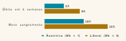
No ventilado, pantoprazol reduziu sangramento importante (1,0% × 3,5%) sem mudar a mortalidade (REVISE, 2024).
Laceração após vômitos repetidos: costuma parar sozinha; endoscopia trata se ainda sangra.
Ponte de até 24 h, com via aérea protegida, até ligadura de resgate ou TIPS.
| Etapa | O que fazer | ⚠️ Pegadinha de prova |
|---|---|---|
| 1. Puncionar | Paracentese diagnóstica em todo cirrótico internado com ascite, e ao piorar: celularidade, albumina, proteína total e cultura em frasco de hemocultura à beira do leito. | Coagulopatia não contraindica a punção; plasma "preventivo" não é necessário. |
| 2. Classificar | GASA ≥ 1,1 g/dL = hipertensão portal. PMN ≥ 250/mm³ = PBE, mesmo com cultura negativa. | Vários germes, proteína alta e glicose baixa sugerem peritonite secundária: imagem e cirurgia. |
| 3. Tratar PBE | Cefalosporina de 3ª geração, ajustada à flora local; albumina 1,5 g/kg no D1 e 1 g/kg no D3. Profilaxia após HDA: ceftriaxona; após PBE: profilaxia contínua. | A albumina previne a síndrome hepatorrenal; não é "suporte nutricional". |
| 4. Ascite | Sódio ≈ 2 g/dia, espironolactona 100 + furosemida 40 mg, subindo na mesma proporção. Grande volume: albumina 6–8 g por litro retirado acima de 5 L. | Restringir água só com sódio abaixo de 125 mEq/L. AINE e IECA pioram o rim. |
| 5. Encefalopatia | Procure o gatilho: sangramento, infecção, constipação, hipocalemia, sedativo. Lactulose para 2–3 evacuações/dia; rifaximina para prevenir recorrência. | Amônia normal não exclui nem amônia alta confirma: o diagnóstico é clínico. |
Conteúdo educativo. Siga o protocolo institucional.
Mulher de 62 anos, cirrose por hepatite C, febre baixa, dor abdominal difusa e confusão. Creatinina de 1,0 para 1,6. Líquido ascítico: 820 PMN/mm³.
Conduta: ceftriaxona, albumina 1,5 g/kg hoje e 1 g/kg no 3º dia, suspender diurético, lactulose. Se a creatinina não cair com albumina, pense em síndrome hepatorrenal: terlipressina + albumina.
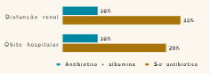
Child-Pugh soma bilirrubina, albumina, INR, ascite e encefalopatia; o MELD-Na orienta prognóstico e fila de transplante.
Terlipressina + albumina reverteu 32% × 17% (CONFIRM, 2021), com mais insuficiência respiratória: vigie volume.
Abstinência, vacinas, rastreio de carcinoma a cada 6 meses e avaliação para transplante.
Transdutor convexo no epigástrio, corte sagital: o antro aparece entre o lobo esquerdo do fígado e o pâncreas, sobre a aorta. Olhe em supino e em decúbito lateral direito. Escala de Perlas: grau 0, vazio nas duas posições; grau 1, líquido só no lateral direito (volume baixo); grau 2, líquido visível também em supino (volume alto, acima de ≈ 1,5 mL/kg). Conteúdo sólido tem aspecto de "vidro fosco".
⚠️ Pegadinha: sangue e coágulo são ecogênicos e imitam sólido. Na hemorragia digestiva, estômago cheio é presunção: sequência rápida de qualquer jeito; o POCUS só reforça.
1º grau: PR acima de 200 ms, todas as P conduzem. 2º grau Mobitz I (Wenckebach): o PR aumenta até uma P bloqueada; em geral nodal e benigno. Mobitz II: PR fixo e P bloqueada de repente; infra-hissiano, com risco de BAV total e indicação de marcapasso. 3º grau: P e QRS independentes; escape estreito (40–60) sugere juncional, largo (20–40), ventricular.
⚠️ Pegadinha: betabloqueador não seletivo e terlipressina, comuns no cirrótico que sangra, causam bradicardia. Atropina funciona no bloqueio nodal e pouco no infra-hissiano: tenha o marcapasso transcutâneo pronto.
A curva contínua de CO₂ por vários ciclos é o melhor sinal de tubo na traqueia; ausculta e vapor no tubo enganam. EtCO₂ normal fica em 35–45 mmHg, poucos pontos abaixo da PaCO₂. A diferença cresce quando há espaço morto: TEP, baixo débito, hiperinsuflação. Curva em "barbatana de tubarão" indica obstrução expiratória, como broncoespasmo. Na PCR, subida súbita do EtCO₂ sugere retorno da circulação.
Líquido no antro já em supino? Grau 2: volume alto.
PR fixo e P bloqueada de repente? Mobitz II: marcapasso.
Sem curva de CO₂ após a IOT? Tubo no lugar errado até prova em contrário.
Anthropic. A empresa precificou a ação a US$ 83 em 18/11, acima da faixa de US$ 70 a 78, e vendeu 980 milhões de ações, cerca de US$ 81,3 bilhões. Os bancos têm 30 dias para comprar mais 147 milhões. No 1º pregão, em 19/11, a ação abriu a US$ 111,50, chegou a US$ 114,99 e fechou a US$ 97,17, alta de 17,1%; no after-market, recuou a US$ 92,60. O 2º pregão não estava publicado no fechamento.
OpenAI. Segundo o boletim The Neuron, de 18/11, a empresa lançou o GPT-6.2 Astra e o Sol. O documento de segurança da própria OpenAI classifica o Astra como o primeiro modelo lançado a atingir nível "alto" em autoaperfeiçoamento de IA, e os dois chegam a nível "crítico" em cibersegurança. No teste de agentes citado, o Astra fez 5,2 pontos a mais com menos de um terço do custo.
Big techs. O Google passou a guardar as conversas temporárias do Gemini por cerca de dois meses, e não mais 72 horas. A Microsoft lançou os modelos de programação MAI Code 2 e Code 2 Flash. A Nvidia reportou receita de US$ 115,8 bilhões no trimestre, US$ 107,6 bilhões de data center. Washington restringiu o acesso chinês a chips avançados por nuvem no exterior, e Pequim ameaçou retaliar.
Apple e Windows. A versão estável é o iOS 27.2.1, de 9/11; o 27.2 trouxe a Siri com IA em português, fora da União Europeia e da China. Em 19/11 saiu o 2º beta do iOS 27.3. No Windows 11, o pacote de 10/11 corrigiu 594 falhas, 33 críticas; o próximo é em 8/12. O Windows 10 LTSC 2021 perde suporte gratuito em 12/01/2027.
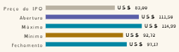
iPhone: Ajustes › Geral › Atualização de Software. Windows: Configurações › Windows Update. Faça com bateria e Wi-Fi.
Conversa "temporária" agora fica guardada por mais tempo. Trate todo chat como algo que pode ser lido depois.
Alertas de cibersegurança de 18–20/11 não foram confirmados com data; ficam para a próxima edição.
A conta. Flamengo tem 79 pontos e 24 vitórias; o Palmeiras, 73 e 21. Se o Flamengo vencer, vai a 82 e ninguém o alcança. Se empatar, fica com 80, e o máximo do Palmeiras seria 80 com 23 vitórias: o 1º critério de desempate, número de vitórias, dá o título ao Flamengo. Se perder, a diferença cai a três pontos com duas rodadas por jogar, e a festa fica para depois.
Rodada. Sábado: Bahia × Coritiba (17h30) e Chapecoense × Cruzeiro (21h). Domingo: Athletico-PR × Remo (16h), Fluminense × Mirassol (18h30), Bragantino × Vasco (19h30). Segunda: Internacional × Vitória (19h30), Botafogo × São Paulo (20h) e Santos × Grêmio (21h). Quarta: Atlético-MG × Corinthians (20h).
Embaixo. A Chapecoense, com 21 pontos, já está rebaixada. Remo (32), Grêmio e Internacional (38) e Corinthians (40) estão no meio da briga para fugir das outras três vagas. Transmissão e escalações não estavam confirmadas no fechamento.
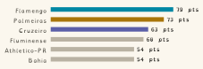
| # | Time | Pts | SG | # | Time | Pts | SG |
|---|---|---|---|---|---|---|---|
| 1 | Flamengo | 79 | +43 | 11 | São Paulo | 44 | −1 |
| 2 | Palmeiras | 73 | +38 | 12 | Botafogo | 42 | −11 |
| 3 | Cruzeiro | 63 | +8 | 13 | Coritiba | 42 | −12 |
| 4 | Fluminense | 60 | +14 | 14 | Vitória | 41 | −15 |
| 5 | Athletico-PR | 54 | +7 | 15 | Mirassol | 41 | −9 |
| 6 | Bahia | 54 | +5 | 16 | Corinthians | 40 | −2 |
| 7 | Atlético-MG | 51 | +4 | 17 | Internacional | 38 | −5 |
| 8 | Santos | 50 | +2 | 18 | Grêmio | 38 | −9 |
| 9 | Bragantino | 47 | +4 | 19 | Remo | 32 | −18 |
| 10 | Vasco | 47 | −4 | 20 | Chapecoense | 21 | −39 |
35 jogos para todos; faltam 3 rodadas. Zona de queda: 17º ao 20º.
Jogo às 16h30 de Brasília e de Fortaleza. Hidrate-se, coma antes e combine a volta para casa sem álcool ao volante. Pág. 28.
Palmeiras × Estudiantes em 28/11, em Montevidéu. O Estudiantes eliminou o Flamengo no Maracanã.
Maringá campeão da C; sobem também Santa Cruz, Ferroviária e Inter de Limeira. Uberlândia campeão da D.
Vila Real. O time sobralense empatou por 1 × 1 com o Ceará Sub-20 no PV em 15/11 e chegou a 7 pontos no Grupo B, sem chance de ser ultrapassado pelo Atlético Cearense, seu adversário de domingo na última rodada. O clube também garantiu acesso à Série B do Cearense de 2027 como vice da Série C. Horário do jogo não divulgado até o fechamento.
Taça Fares Lopes. São nove clubes em três grupos. Na 4ª rodada, o Icasa venceu o Quixadá por 1 × 0 e o Fortaleza fez 4 × 0 no Palmácia. No domingo, o Icasa recebe no Romeirão o Guarani de Juazeiro. O Guarany de Sobral não está entre os participantes de 2026.
Fortaleza. O 4º colocado da Série B, com 65 pontos, joga a ida do playoff de acesso contra o Criciúma no domingo (22), às 16h, no Heriberto Hülse; a volta é no sábado (28), às 20h, no Castelão. Com empate no agregado, o Fortaleza sobe. O técnico é Juan Pablo Vojvoda. Uma fonte cita a ida no sábado; o jornal segue a data do O Povo, mais recente.
Ceará. O alvinegro terminou a Série B em 16º, com 44 pontos, um acima da zona de queda. O clube iniciou reformulação: Gabriel Bedê assume a direção de futebol, e o técnico Daniel Paulista saiu em 08/11.
| Time | Situação |
|---|---|
| Vila Real (Sobral) | Líder, 7 pts |
| Ceará Sub-20 | Pontuação não localizada |
| Atlético Cearense | Não alcança o líder |
Fonte: Diário do Nordeste (16/11). A 5ª rodada ainda não tinha resultados publicados.
| Dom 22 · 16h | Criciúma × Fortaleza |
| Sáb 28 · 20h | Fortaleza × Criciúma |
| Outro duelo | Vila Nova × Atlético-GO |
Notícias de Guarany, Junco, campeonato amador e futsal não foram localizadas nesta semana. Clube ou liga com novidade pode mandar a programação.
Bahia (6º, 54) recebe o Coritiba no sábado, 17h30, na Fonte Nova. Vitória (14º, 41) visita o Internacional na segunda, 19h30.
Série B 2026: CRB 7º, Sport 9º e Náutico 15º. Santa Cruz volta à Série B em 2027; o Confiança caiu para a D.
Copa do Nordeste 2027: de 24/03 a 13/06, pelo calendário da CBF. Data do sorteio não divulgada.
F1. No TL3, George Russell marcou 1min34s041, 0s911 à frente do campeão Kimi Antonelli, com Norris, Leclerc e Colapinto em seguida. Gabriel Bortoleto, da Audi, foi o 16º. Os comissários vão analisar um lance de Verstappen com Colapinto e um gesto obsceno dele para Russell após uma ultrapassagem. A corrida tem 50 voltas. Antonelli e a Mercedes já são campeões.
MotoGP. No GP de Portugal, Alex Márquez foi o mais rápido no TL1. Marc Márquez é campeão já na Sprint de sábado se somar ao menos dois pontos a mais que Jorge Martín, e chegaria ao 8º título, igualando um feito de Valentino Rossi. A temporada fecha em Valência.
Sul-Americana. Atlético-MG × Boca Juniors, hoje às 20h, jogo único no Estádio Metropolitano, em Barranquilla, com transmissão de Paramount+, Disney+ e SBT. O Galo eliminou Bragantino e Santos e passou pelo Montevideo City Torque na semi (3 × 0 e 0 × 2); busca o 1º título, depois de perder a final de 2025 nos pênaltis. O Boca eliminou o São Paulo e virou sobre o Vasco no Maracanã; busca o tri.
Tênis. No ATP Finals, em Turim, Alcaraz bateu Cobolli por 6/4 6/1 e Medvedev venceu Tiafoe por 6/3 6/4; Zverev e Shelton também estão nas semifinais de hoje. A final é no domingo. A dupla brasileira Orlando Luz e Rafael Matos perdeu para Arévalo e Pavic em 19/11.
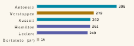
| Sáb 1h | F1: classificação |
| Sáb 13h | UFC Catar |
| Sáb 20h | Galo × Boca |
| Dom 1h | F1: corrida |
| Dom | Final do ATP Finals |
Newcastle × Arsenal, Gladbach × Dortmund, Real Madrid × Celta e, no domingo, Barcelona × Villarreal e Liverpool × Manchester United. Líderes e horários vêm de fonte única: confira no app da liga.
Fase final em Bolonha, de 24 a 29/11, com Itália, Espanha, Alemanha e mais cinco. O Brasil não se classificou.
Felipe Baptista venceu a Corrida do Milhão; Fraga lidera com 964 pontos e a decisão é em Interlagos, em dezembro.
Mirra Andreeva foi campeã invicta, 7/5 6/3 sobre Svitolina, em 15/11.
Vôlei. Depois de seis rodadas, o Sesc RJ Flamengo tem 18 pontos e seis vitórias, um à frente do Gerdau Minas, também invicto, e do Sesi Bauru. O duelo com o Osasco, 5º colocado, é na segunda (23), às 21h, e não neste fim de semana, como a edição anterior deu a entender. O Mundial de Clubes feminino será em São Paulo, em dezembro.
Seleção feminina. Arthur Elias convocou o time para os últimos amistosos de 2026, contra o Japão, em Hiroshima (29/11) e Okayama (05/12). Kerolin está fora por lesão no pé, e Marta, preservada, segue nos planos para a Copa. O São Paulo é o campeão brasileiro de 2026: empatou por 1 × 1 com o Corinthians no Morumbis, em 03/10, diante de 49.405 pessoas, recorde para clubes na América do Sul segundo o O Povo.
Basquete. O Minas é o único invicto do NBB, com 7 vitórias, a última por 88 × 57 sobre o Unifacisa. Na NBA, em 19/11, Wembanyama fez 32 pontos e 11 rebotes na vitória dos Spurs sobre os Clippers (124 × 112), Lillard marcou 33 na volta a Milwaukee e os Grizzlies chegaram a cinco vitórias seguidas. A NBA Cup teve nove jogos na sexta.
UFC. O card do Catar, hoje a partir das 13h, tem Jiří Procházka na luta principal e quatro brasileiros: Tallison Teixeira, Alessandro Costa, Manoel Sousa e Nikolas Motta. O card pode mudar até a pesagem.
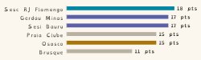
| Sáb 21 · 13h | UFC Catar |
| Seg 23 · 21h | Fla × Osasco (vôlei) |
| Dom 29 | Japão × Brasil (feminino) |
| Sáb 05/12 | 2º amistoso no Japão |
A nº 015 indicou o jogo Flamengo × Osasco como o próximo, sem data; ele é na segunda (23), às 21h, com horário sujeito a mudança.
Em 12/11, Mogi tinha 5–1 e Pinheiros 5–2 no NBB, perseguindo o Minas.
Primeira Copa feminina na América do Sul, de 24/06 em diante. O amistoso no Japão é teste de força fora de casa.
Superliga Masculina, surfe, atletismo e judô não tiveram fatos novos confirmados até o fechamento.
GTA VI. Lançado à 0h de 19/11 no Brasil, para PlayStation 5 e Xbox Series X|S, roda a 30 quadros por segundo e pede cerca de 212 GB. A edição padrão custa R$ 449,90 e a Ultimate, R$ 549,90; a versão física traz só um código. Metacritic e OpenCritic marcam 99, e a IGN deu 10. No PS5 básico, cenas pesadas caem para perto de 20 quadros. Na véspera, a rede da Sony teve milhares de relatos de instabilidade, sem comentário oficial. Versão de PC é apenas rumor.
The Game Awards. A premiação é em 10/12. GTA VI lidera com oito indicações; Resident Evil Requiem e Control Resonant têm seis. Concorrem a Jogo do Ano também 007 First Light e Phantom Blade Zero. Dois brasileiros estão na disputa: Cellbit, em Criador de Conteúdo, e a LOUD, em Equipe de e-sports.
Telas. "Jogos Vorazes: Amanhecer na Colheita" vendeu mais de 160 mil ingressos na pré-venda no Brasil; a data exata de estreia varia entre as fontes, de 18 a 20/11. No streaming, chegaram a 3ª temporada de "Percy Jackson" e a 4ª e última de "Yellowjackets".
Espaço. O satélite Terra para de coletar dados em 01/12 e será desligado em janeiro, depois de 27 anos, mais de quatro vezes a vida prevista. O telescópio Roman divulga as primeiras imagens em 07/12. E o Zarya, primeiro módulo da Estação Espacial Internacional, completou 28 anos de lançamento na sexta (20).
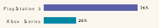
| 24/11 | Superlua (cheia às 11h53) |
| 25/11 | Urano em oposição (binóculo) |
| Até 30/11 | Black Friday da PS Store |
| 07/12 | 1ª imagem do Roman |
| 10/12 | The Game Awards |
No voo de balão de 21/11/1783, os tripulantes apagavam com esponjas molhadas as fagulhas que queimavam o tecido. Benjamin Franklin assistiu de casa.
Antes de baixar, apague o que não joga e deixe 20% do disco livre. SSD lotado fica lento.
Mundo aberto é hiperfoco garantido. Alarme no celular e jogo só depois da tarefa do dia.
O pico passou em 17–18/11, mas a chuva segue até 30/11; olhe para o leste antes do amanhecer.
Vendas. Foram 93.679 veículos leves emplacados de 1º a 15/11, queda de 12,5% sobre a 1ª quinzena de outubro e de 11,4% sobre novembro de 2025; a média diária ficou em 10.409. A Fiat Strada lidera com 6,2% do mercado. Entre os carros de passeio, até 13/11, o Fiat Argo vinha à frente do BYD Dolphin Mini, elétrico, e do Hyundai HB20.
No ano. Somando todos os segmentos, a Fenabrave contou 489.119 emplacamentos em outubro e 4.722.650 de janeiro a outubro, alta de 12,62%; os eletrificados mais que dobraram, para 524.766 unidades. A entidade projeta alta de 12,8% em 2026, perto de 5,6 milhões.
CNH. A Resolução Contran 1.033/2026 manteve válidas até 09/12/2026 as carteiras e autorizações vencidas entre 05/06 e 08/12; depois disso, há 30 dias para renovar. A Resolução 1.032 cria um sistema nacional de vistorias.
Bomba. Na semana de 08 a 14/11, a ANP registrou em Fortaleza gasolina a R$ 6,97, etanol a R$ 4,92 e diesel S10 a R$ 7,09; o botijão subiu pela 5ª semana, a R$ 112,42. A média do Ceará na gasolina foi de R$ 6,91.
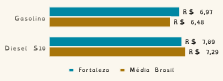
Divida o etanol pela gasolina: abaixo de 0,70, o etanol tende a compensar. Em Fortaleza: 4,92 ÷ 6,97 = 0,706, empate técnico. Seu carro pode ter outra conta: anote quilômetros por litro.
Venceu desde junho? Agende o exame agora: perto de 09/12, a fila aumenta. Médico, plantão e pressa não combinam com carteira vencida.
Antes de comprar: onde carregar em casa e no trabalho, preço do seguro e valor de revenda em 3 anos.
Calor pede calibragem com pneu frio, arrefecimento em dia e palhetas trocadas antes da chuva.
Consulte pelo chassi no site do fabricante ou no portal de recalls do governo. Reparo é gratuito.
| Sinal | O que costuma ser | O que fazer |
|---|---|---|
| "Pague a taxa de entrega" | Mensagem falsa depois de uma compra real. | Confira o pedido só no app da loja. |
| Pix para outro nome | Recebedor que não é a loja. | Leia o nome antes de confirmar; desista. |
| QR code colado | Adesivo sobre o código verdadeiro. | Digite o valor e confira o destinatário. |
| "Sem juros" caro | Parcelado mais caro que o à vista. | Compare o total pago. |
| Cadeado no navegador | Não prova que a loja existe. | Confira CNPJ, endereço e reputação. |
PS Store em promoção até 30/11, com títulos antigos a partir de cerca de R$ 25. Preço muda: confira na loja oficial.
Um cartão virtual por compra, apagado depois. Se o número vazar, o prejuízo fica limitado àquela compra.
Bloqueie o cartão pelo app, avise o banco, peça o MED do Pix e registre boletim de ocorrência, que no Ceará pode ser on-line.
O número na tela pode ser mascarado. Desligue e ligue você para o número do cartão.
consumidor.gov.br e Procon. A loja responde em prazo definido e o registro vira prova.
| Item | Referência publicada | Veredito 360 |
|---|---|---|
| iPhone 17 · 256 GB | Lançado a R$ 8.000; menor preço visto R$ 5.400; "bom" até R$ 5.100 (Canaltech, 18/10). | 🟡 Só se o seu aparelho não atualiza mais. |
| iPhone 18 Pro · 256 GB | Cerca de R$ 12.000 no lançamento; média recente de R$ 10.700. | 🔴 Esperar: alto custo, ganho pequeno sobre o anterior. |
| Galaxy S26 · 256 GB | Visto a R$ 3.779,10 no Pix, com fone (Canaltech, 04/11). | 🟡 Decidir após 72 h com a lista na mão. |
| GTA VI | R$ 449,90 a edição padrão; R$ 549,90 a Ultimate. | 🟢 Se já tem o console, é compra de lazer planejada. |
| Console novo | Promoções variam por loja e dia. | 🔴 Não comprar só por causa de um jogo. |
Desative a compra com um clique e tire o cartão salvo do navegador até sexta. Atrito é proteção.
Backup, apagar o aparelho velho, sair do iCloud ou da conta Google antes de vender.
Peça nota fiscal, IMEI e garantia por escrito. Sem nota, não compre.
Preço + frete + capa + seguro + juros. O "desconto" precisa sobreviver a essa soma.
Backup feito, bateria acima de 50% e Wi-Fi. Atualização de segurança vale instalar logo; versão beta, só em aparelho reserva.
Apps que você não abriu em 30 dias: desinstale. Assinatura esquecida: cancele no Ajustes › seu nome › Assinaturas.
A doutrina. Bastter, investidor que há décadas escreve para o pequeno poupador, resume a ideia em poucas linhas: a renda verdadeira é a do trabalho; investir serve para guardar e multiplicar o que o trabalho gerou. Patrimônio se acumula com aportes regulares, de preferência um percentual fixo da renda, por muitos anos. Na renda fixa, o objetivo é preservar o poder de compra, com títulos ligados à Selic e à inflação. E ninguém acerta a hora de entrar e sair: quem tenta costuma comprar caro e vender barato.
O que o jornal não trata. A filosofia de Bastter também inclui ações para o longo prazo. Esta seção não trata de renda variável e não recomenda nenhum ativo.
Os números. Na tabela regressiva do IR, a alíquota cai de 22,5% (até 180 dias) para 20%, 17,5% (até 720 dias) e 15% (acima disso). A MP 1303, que taxaria LCI e LCA, perdeu a validade em julho: elas seguem isentas para pessoa física, com prazo mínimo definido pelo CMN; as fontes divergem sobre o prazo atual, então confira antes. O FGC cobre até R$ 250 mil por CPF e instituição, com teto de R$ 1 milhão a cada quatro anos; Tesouro Direto é garantido pelo governo.
Tesouro em 18/11. Tesouro Selic 2031: Selic + 0,1082%. Prefixado 2029: 14,94%. IPCA+ 2032: IPCA + 7,74%. Quando os juros oscilam muito, o Tesouro pausa a venda dos prefixados e IPCA+, como em 19/11, e o Tesouro Selic segue disponível.
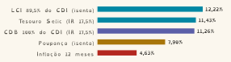
Renda variável de mês para mês? Aporte pelo mês fraco e mande a sobra dos meses bons para a reserva.
Teto de R$ 81 mil e DAS a partir de R$ 81,05. O PLP 186/2026, que subiria o teto, ainda tramita.
Promessa de rendimento muito acima do CDI com "garantia"? Espere 72 h e pergunte a quem não ganha comissão.
Imóvel. Em 13/11, a vice-presidente da Caixa disse que o banco estuda subir os juros do crédito imobiliário; era o único dos quatro maiores que ainda não tinha subido, e tem 68,2% do mercado. As taxas mínimas no fim de outubro: Santander 12,49%, Itaú 12,95% e Bradesco 15%, mais TR. No Minha Casa Minha Vida, as taxas vão de 4% a 8,16% ao ano para renda de até R$ 9,6 mil; a Faixa 4, para renda até R$ 13 mil, financia imóveis de até R$ 600 mil.
Terreno. Peça a matrícula atualizada no cartório de imóveis e as certidões de ônus e de ações do vendedor. Loteamento precisa estar registrado; "contrato de gaveta" não transfere a propriedade. Some ITBI, escritura e registro, que variam por município: confira na prefeitura.
Veículo. Carro é bem de consumo: perde valor mais rápido nos primeiros anos e custa seguro, IPVA, manutenção e combustível todo mês. Financiar com juro alto multiplica esse custo. A pergunta honesta é se o carro resolve um problema real, como o deslocamento para o plantão, e qual modelo resolve com menos gasto.
Compra e revenda. Quem revende com frequência é comerciante: o MEI permite faturar até R$ 81 mil por ano, com nota fiscal. Quem vende responde pelo produto pelo Código de Defesa do Consumidor. E comprar bem sem procedência pode configurar receptação (art. 180 do Código Penal): exija nota, confira chassi, IMEI e débitos.
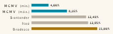
Peça o CET por escrito. A parcela que "cabe" pode esconder o dobro do preço em 30 anos.
Imóvel, terreno e carro: nunca no mesmo dia da visita. Leve o contrato para alguém de confiança ler.
Contrato de imóvel: advogado. Tributo do MEI: contador. O jornal só organiza as perguntas.
Dólar a R$ 5,934 em 19/11, sexta alta seguida; sem câmbio à vista no feriado de 20/11 (p.4).
O PLP 299 precisa de 257 votos; fontes citam sessão na segunda (23) ou na terça (24) (p.2).
A Guarda Revolucionária diz que Ormuz está fechado; o Brent fechou a US$ 91,95 em 18/11 (p.5).
Flamengo 79 × Palmeiras 73: no empate de hoje, o título vem pelo número de vitórias (p.12). Galo × Boca às 20h; F1 à 1h de sábado e de domingo (p.14). GTA VI pede cerca de 212 GB (p.16). O Fortaleza joga em Criciúma no domingo; o Ceará ficou na Série B (p.13).
O Gepeto é o mascote do Agente Editorial 360. Ele não tem opinião política, cita as fontes e manda dormir quem dá plantão.
A origem. O médico alemão Samuel Hahnemann (1755–1843) tomou casca de quina, remédio da malária, e sentiu febre e calafrios. Concluiu que uma substância que provoca sintomas no sadio curaria sintomas parecidos no doente: similia similibus curentur. Publicou a ideia em 1796 e o Organon em 1810. Para evitar efeitos tóxicos, passou a diluir e agitar os preparados em série.
A conta de Avogadro. Na escala centesimal, cada passo dilui 1 parte em 100. Uma potência 12CH equivale a 10⁻²⁴: passa do número de Avogadro (6,02 × 10²³), e é improvável que reste uma única molécula da substância inicial. Os defensores falam em "memória da água"; nenhum mecanismo desse tipo foi demonstrado.
A evidência. Uma análise de 110 ensaios homeopáticos, comparados a 110 convencionais, concluiu em 2005, na Lancet, que os efeitos eram compatíveis com placebo. Em 2015, o conselho nacional de pesquisa médica da Austrália revisou 176 estudos e não achou condição de saúde com evidência confiável de eficácia. O risco real é outro: atrasar tratamento eficaz, ou usar produto mal fabricado, como os comprimidos de dentição com beladona que a FDA alertou em 2017.
No Brasil. O médico francês Benoît Mure chegou em 21/11/1840 e difundiu a prática. O Conselho Federal de Medicina reconheceu a homeopatia como especialidade em 1980, e a Política Nacional de Práticas Integrativas a incluiu no SUS em 2006. O CFM promoveu em 2025 um debate crítico sobre as evidências.
O que fica de útil. A consulta homeopática costuma ser longa e atenta. Isso conta: ser ouvido muda a experiência do doente, e o placebo tem efeito modesto em sintomas subjetivos, como dor e náusea, mas não encolhe tumor nem cura infecção.
| Efeito além do placebo em revisões amplas | 🔴 |
| Placebo alivia dor e náusea, pouco | 🟡 |
| Consulta longa melhora a experiência | ✅ |
| Substitui vacina, antibiótico ou insulina | 🔴 |
| "Natural" é sempre seguro | 🔴 |
✅ evidência · 🟡 plausível, efeito pequeno · 🔴 sem evidência ou contrário a ela.
As Farmácias Vivas, criadas na UFC em 1983 e citadas em 19/11, mostram o caminho do meio: planta identificada, dose e segurança estudadas.
O céu. Em setembro de 1783, um balão dos irmãos Montgolfier subiu em Versalhes com uma ovelha, um pato e um galo. Em 21/11, dois homens voaram sobre Paris. Benjamin Franklin, embaixador dos recém-independentes Estados Unidos, que dois meses antes assinara o Tratado de Paris, assistiu. A frase atribuída a ele resume a época: de que serve um bebê recém-nascido?
O fluido. O médico Franz Anton Mesmer, chegado de Viena em 1778, dizia curar com um "magnetismo animal" invisível. Em salões, pacientes davam as mãos em volta de uma tina com hastes de ferro, tinham convulsões e se diziam curados. A moda dividiu a corte e os médicos.
O teste. Em 1784, Luís XVI nomeou uma comissão com Franklin, o químico Antoine Lavoisier, o astrônomo Jean-Sylvain Bailly e o médico Joseph-Ignace Guillotin. Eles vendaram os voluntários: quem achava que estava sendo magnetizado reagia, mesmo sem ninguém por perto; quem era magnetizado sem saber, não. Num jardim, um rapaz vendado desmaiou diante de uma árvore comum. Conclusão do relatório: o efeito vinha da imaginação. É considerado um dos primeiros experimentos cegos da história.
A ironia. Bailly e Lavoisier morreriam guilhotinados durante o Terror, em 1793 e 1794. Guillotin não inventou a máquina; propôs um método igual para todos os condenados, e o nome ficou com ele.
Entre os séculos XV e XVIII, estima-se que dezenas de milhares de pessoas, a maioria mulheres, foram executadas na Europa por "bruxaria", com manuais como o Malleus Maleficarum (1486). O pânico moral se espalhava por boato e confissão sob tortura. A desinformação de hoje usa o mesmo motor: medo, pressa e um culpado fácil.
A Assembleia Mundial da Saúde aprovou em maio de 2025 a Estratégia de Medicina Tradicional 2025–2034 da OMS, que pede evidência, segurança e integração "quando apropriado". A Índia sedia o centro global da OMS para o tema e tem um ministério próprio, o AYUSH. A CID-11 ganhou um capítulo de medicina tradicional.
Placebo é latim para "agradarei", 1ª palavra de um verso de salmo cantado nos ofícios pelos mortos. Mesmerizar vem de Mesmer. Guilhotina, de Guillotin.
✝️ Bíblia · João 8:32 e Efésios 4:25
"Conhecereis a verdade, e a verdade vos libertará." · "Deixai a mentira; fale cada um a verdade com o seu próximo."
Reflexão: a mentira prende quem mente, que precisa lembrar da versão. A verdade dita com cuidado liberta os dois lados. Hoje: corrija uma meia-verdade que você deixou passar.
✡️ Torá · Êxodo 23:7 e Levítico 19:11
"Afasta-te da palavra falsa." · "Não furtareis, não mentireis, não enganareis uns aos outros."
Reflexão: a lei põe a mentira ao lado do furto: tirar a verdade de alguém é tirar algo que é dele. Hoje: não "arredonde" um número para parecer melhor.
📜 Talmude · Shabat 55a e Pirkei Avot 1:18
"O selo do Santo, bendito seja, é a verdade." · "O mundo se mantém sobre três coisas: justiça, verdade e paz."
Reflexão: em hebraico, emet usa a primeira, a do meio e a última letra do alfabeto: a verdade inteira, do começo ao fim. Hoje: termine a frase difícil, sem deixá-la pela metade.
☪️ Alcorão · Suratas 2:42 e 9:119
"Não mistureis a verdade com a falsidade, nem oculteis a verdade, sabendo-a." · "Estai com os verazes."
Reflexão: omitir o que se sabe também é falsear. E a companhia conta: ande com quem fala a verdade. Hoje: diga o que sabe ao colega que precisa saber.
☯️ Confúcio · Analectos 2:17
"Saber que se sabe o que se sabe e que não se sabe o que não se sabe: isso é saber."
Reflexão: é a frase mais útil da medicina. "Não sei, vou verificar" protege o paciente e o médico. Hoje: use essa frase uma vez, sem vergonha.
☸️ Budismo · Dhammapada 223 e a Fala Correta
"Vença a ira com a calma, o avarento com a generosidade, a mentira com a verdade."
Reflexão: a Fala Correta do Nobre Caminho pede palavras verdadeiras, úteis e ditas na hora certa. Hoje: antes de falar, pergunte: é verdade, é útil, é a hora?
| Ideia | Onde aparece |
|---|---|
| Mentir é tirar algo do outro | Levítico 19:11, Efésios 4:25 |
| Omitir também falseia | Alcorão 2:42, Êxodo 23:7 |
| Admitir que não sabe | Analectos 2:17, Sócrates em Platão |
| Verdade com bondade | Fala Correta, Efésios 4:15 |
Que verdade você está adiando dizer, a alguém ou a si mesmo? Escreva uma linha. Não precisa dizer hoje: precisa parar de fingir que não sabe.
Prometer demais é a mentira mais comum de quem quer agradar. Diga "vejo e te respondo amanhã" e cumpra.
Piltdown, 1953. Kenneth Oakley aplicou o teste de flúor, e Joseph Weiner e Wilfrid Le Gros Clark examinaram os dentes: a mandíbula era de orangotango, com dentes limados e manchados para parecer antiga. A ciência levou 41 anos, mas se corrigiu em público. Honra, aqui, é a disposição de anunciar o próprio engano.
Helicobacter, 1984. Os australianos Barry Marshall e Robin Warren defendiam que uma bactéria causava gastrite e úlcera, contra o consenso da época. Marshall bebeu uma cultura do germe e teve gastrite comprovada por biópsia. A dupla ganhou o Nobel de Medicina de 2005, e a úlcera passou a ter cura com antibiótico.
Semmelweis, 1847. Em Viena, o obstetra Ignaz Semmelweis notou que a febre puerperal matava mais na enfermaria atendida por médicos que vinham das autópsias. Mandou lavar as mãos com solução clorada, e a mortalidade caiu de perto de 10% para cerca de 1% a 2%. Foi ridicularizado; os fatos lhe deram razão.
Feynman, 1974. Num discurso a formandos, o físico Richard Feynman disse que o primeiro princípio é não enganar a si mesmo, a pessoa mais fácil de enganar. Vale para o laboratório e para a beira do leito.
Programas de comunicação e resolução, como o da Universidade de Michigan, associaram a transparência a menos processos. Siga a política da instituição.
Com o roteiro estruturado I-PASS, erros médicos caíram 23% e eventos adversos evitáveis, 30%, em hospitais pediátricos (NEJM, 2014). Dizer o que ficou pendente é verdade aplicada.
Na visita, "não sei, vou checar e volto às 14h" vale mais que um palpite seguro. Anote e volte.
Registre o que aconteceu, não o que gostaria que tivesse acontecido. O papel protege quem diz a verdade.
Com filhos, admitir o próprio erro ensina mais que qualquer sermão sobre honestidade.
Verdade não é despejar tudo de uma vez. Na má notícia, pergunte o que a pessoa já sabe e quanto quer saber, fale em blocos curtos e ofereça o próximo passo. O protocolo SPIKES organiza essa conversa.
Coração. Pesquisadores de Munique contaram as emergências cardíacas durante a Copa do Mundo de 2006: nos dias de jogo da Alemanha, a incidência foi 2,66 vezes a do período de comparação, 3,26 vezes entre homens. O risco maior ficou com quem já tinha doença coronariana. Emoção intensa libera adrenalina, sobe pressão e frequência, e pode desencadear infarto e arritmia em quem é vulnerável.
Álcool. O "coração de feriado" é o nome clássico da fibrilação atrial que aparece depois de uma bebedeira em quem parecia saudável. Beber muito numa única tarde, no calor, junta desidratação, arritmia e briga. Água entre os copos e comida antes ajudam; dirigir, nunca.
Sono. Final às 20h e F1 à 1h de sábado e de domingo é uma maratona. Ficar acordado por 17 a 19 horas deixa o desempenho parecido com o de quem bebeu. Antes de plantão, escolha uma transmissão e veja os melhores momentos da outra.
Caráter. Sócrates, meio-campista e médico formado pela USP de Ribeirão Preto, liderou nos anos 1980 a Democracia Corinthiana, em que jogadores votavam as decisões do time. Aída dos Santos foi sozinha a Tóquio, em 1964, sem técnico, e ficou em 4º lugar no salto em altura, resultado histórico para o atletismo feminino do país. Torcer bem é também reconhecer o adversário.
| Jogo decisivo dispara eventos cardíacos em vulneráveis | ✅ |
| Bebedeira precipita fibrilação atrial | ✅ |
| Noite em claro piora atenção e reflexo | ✅ |
| Torcer junto melhora o humor | 🟡 |
| Camisa da sorte muda o placar | ✨ |
Dor no peito, falta de ar, desmaio ou palpitação forte durante o jogo: pare, sente e ligue 192. Não espere o apito final.
Jogo é hiperfoco certo. Ponha alarme para o remédio da noite e para dormir, e deixe o celular longe na hora de deitar.
Leitura cultural e simbólica: num teste duplo-cego publicado na Nature em 1985, astrólogos não acertaram perfis acima do acaso. Use como lembrete de atitude, nunca como decisão.
Cálculo do jornal para Sobral (efemérides), horário de Fortaleza.
Cortina fechada à tarde e janela aberta à noite ✅, garrafa de água à vista ✅, petisco sem excesso de sal 🟡, uma vela ou planta na mesa para marcar o descanso ✨. Para ele e para ela: roupa leve e limpa, e o celular carregado longe da cama.
| Planta | Tradição ✨ | O que se sabe |
|---|---|---|
| Juazeiro | Resistência, sombra | Fica verde na seca graças a raízes fundas |
| Carnaúba | "Árvore da vida" | Cera, palha e madeira; símbolo do Ceará |
| Aroeira | Cura de feridas | ⚠️ Pode dar alergia de pele |
Jogo decisivo é aula de emoção: mostre como se comemora sem humilhar e como se perde sem quebrar nada. Criança aprende mais com o que vê no sofá do que com o que ouve.
Combine antes: qual jogo assistir, a que horas dormir e quem cuida de quê no domingo. Acordo feito com calma vale mais que discussão no intervalo.
Em Ajustes › Foco, crie um modo que só deixa passar ligações do hospital e de três contatos. Programe para ligar sozinho na hora do plantão.
No app Lembretes, toque em "i" e escolha "Ao chegar". O iPhone avisa "trocar o crachá" quando você entra no hospital.
Tecle Windows + V para ver os últimos itens copiados e fixar os que você usa sempre. Evite copiar senhas.
No WhatsApp, Configurações › Conta › Confirmação em duas etapas. Um PIN impede que roubem a conta pelo código do SMS.
Salve fotos em WebP ou AVIF e use loading="lazy" nas que ficam abaixo da dobra. A página abre mais rápido no 4G do sertão.
Use a IA para rascunhar um checklist de organização para estudantes; você revisa, cita fontes, avisa que usou IA e vende como guia, nunca como conselho médico individual.
Escolha uma tarefa de casa de 15 minutos e faça antes das 16h30. O jogo vira recompensa, não fuga.
Final às 20h ou F1 à 1h? Uma ao vivo, a outra nos melhores momentos de manhã.
Jornal Diário 360 · Radar 360 Circunstancial · edição nº 016 · Sábado, 21/11/2026 · fechamento na noite de 20/11 · Agente Editorial 360, produzido com Claude (Anthropic), sob curadoria de Aldenir Rocha de Oliveira Filho e Equipe 360X. Gráficos e ilustrações originais; nenhuma foto de terceiros. Saúde: conteúdo educativo, siga o protocolo institucional. Finanças: sem recomendação nem comissão. Política: fatos atribuídos, sem partido. Limitação desta edição: o limite de buscas foi atingido no fechamento; cotações de sexta (20) e alguns resultados ficaram para a próxima edição.